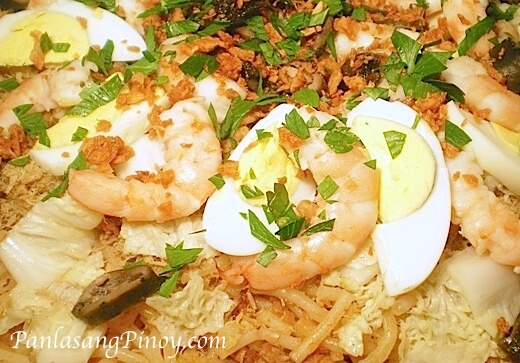

|  | Pancit MalabonPancit Malabon is a flavorful noodle dish that originated in the City of Malabon. This dish resembles the Pancit Palabok but the array of seafood toppings and the traditional tough and thick rice noodles distinguishes this dish. |
Ingredients1 onion, chopped 15 cloves garlic, minced 1/4 cup calamansi juice 1/4 cup fish sauce (patis) 1 teaspoon salt 1 teaspoon ground black pepper 1/2 teaspoon brown sugar meat rice noodles vegetables |
|
| <<< Back to Side Dish | |